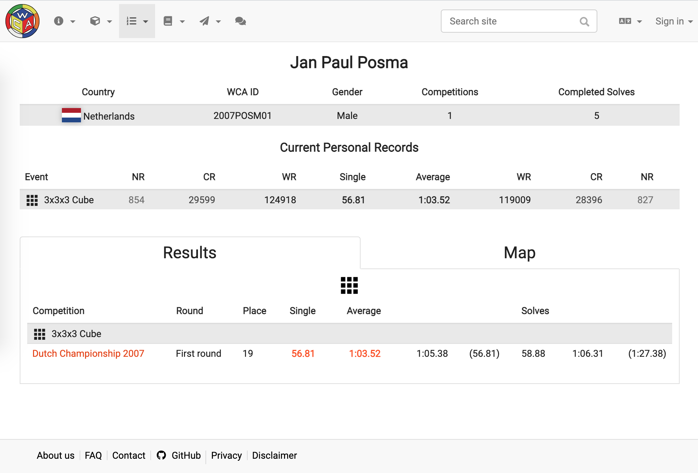

I have an officially recorded Rubik’s cube personal record of under a minute (56.81 seconds). I also (unofficially) solved it blindfolded once, and have a few other weird cubes that I can solve to different degrees. Just so you know! ;-) 